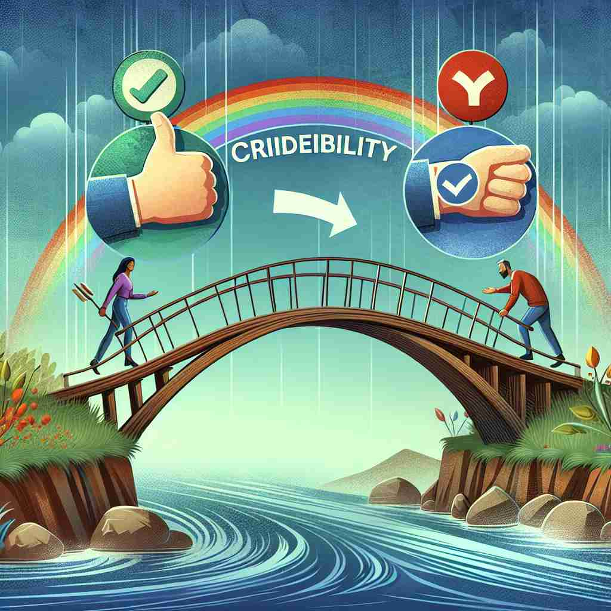

💬 To succeed in business, you need to build credibility with your clients. 要在商业上取得成功，您需要与客户建立信誉。

💬 In the legal profession, it is important to build credibility with clients. 在法律行业，与客户建立信任是非常重要的。
💬 To succeed in business, you need to build credibility with your clients. 要在商业上取得成功，您需要与客户建立信誉。
💬 In the legal profession, it is important to build credibility with clients. 在法律行业，与客户建立信任是非常重要的。
🧠 想象'credibility'是一座桥梁，连接着说话者或信息源与听众或接收者。这座桥的强度取决于它有多值得信赖。无论是个人、组织还是信息，其'credibility'都决定了他人对其的信任程度。通过这个核心概念，你可以轻松理解和记忆'credibility'在不同语境中的应用。
🔈 [kredɪ'bɪlɪtɪ]
🗝️ n. the quality of being believable or worthy of trust 可信性或值得信赖的品质
🎭 在一个律师事务所里，一名律师正在法庭上为他的客户辩护。他条理清晰、证据充分，法官凝神倾听着他的每一个词句，最终信任并采纳了他的论点。这展示了律师的credibility，即值得信任的品质。
💬 The witness's credibility was questioned during the trial. 证人的可信度在审判期间受到质疑。
🌳 由词根 "cred"（意为相信）加上名词后缀 "-ibility" 组成，表示 "可信性，可靠性"。
💡 记忆 "credibility" 时，可以联想到其与 "credit"（信用）相关，即某事物值得信任的程度。通过关联 "cred" 表示相信，理解其在不同单词中的变化。
🗝️ n. the ability to inspire belief or trust 激励信任或信念的能力
🎭 在一个大型企业的会议室中，CEO正对员工发表讲话。他的话语充满热情与信念，激励着每一个在场的人相信公司的未来目标和愿景。这说明了他的credibility，即激励信任和信念的能力。
💬 The politician's credibility suffered after the scandal. 这位政治家的信誉在丑闻后受到了损害。
🤔 从"值得相信"延伸到"能够让人相信"
🗝️ n. the quality of being convincing or believable 可信性
🎭 在一个产品发布会上，市场经理正向观众展示新产品的优越性能。通过详细的数据和实时的演示，观众被他的演讲所说服，纷纷表示愿意尝试新产品。这体现了他的credibility，即具有说服力的品质。
💬 The study's credibility was enhanced by its rigorous methodology. 该研究的可信度得到了严格方法论的提升。
🤔 从"值得相信"到"令人信服"的特质
🗝️ n. reputation for honesty and capability 诚信和能力的声誉
🎭 在一个社区集会上，当地的一位志愿者发言，她以诚实和能力赢得了居民们的一致认可与支持。大家都称赞她在多个项目中表现出色，展现了她的credibility，即她在社区中诚实与能力的声誉。
💬 The company's credibility in the market has grown over the years. 该公司在市场中的信誉随着时间的推移而增长。
🤔 可信赖性延伸为诚实和能力的声誉